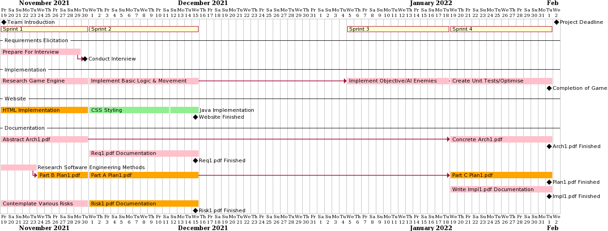
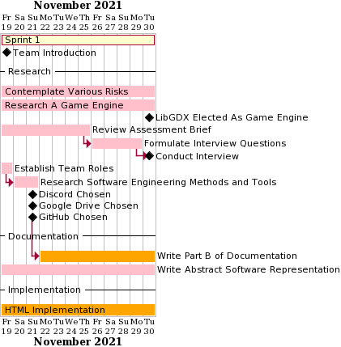
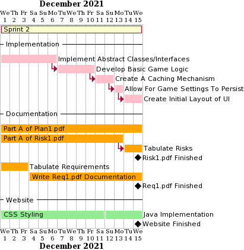
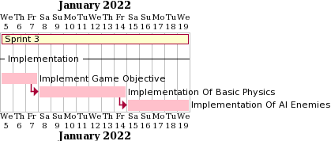

Contents
Welcome to Team Ships and Giggles' Assessment one project
Project Plan
To begin, as a team, we put together an initial plan. This was demonstrated with a Gantt chart:

Gantt chart showing the initial plan to approach the project (not to exact dates).
We discovered this approach was too detailed and as we began completing tasks it became progressively harder to achieve the initial goals we set out. Hence, we decided to change our approach to the planning and distribution of tasks.
This in turn was done by conducting 4 sprints of 2 weeks each adjusting the end goals as required within weekly group meetings on Wednesdays:
New updated Project plan with general goals for each sprint
We redesigned our project overview to more general goals allowing for flexibility among the team. If issues arose or requirements where to change, these can be addressed when the team met and weekly plans adjusted as needed.
Weekly Snapshots
Please find below each weeks plan, as a Gantt chart. These are shown within the sprints that they fall into. Hence, each chart covers 2 weeks and we reviewed progress at weekly meetings on Wednesdays.
19/11/2021 - 24/11/2021
The most up to date sprint plan for this week
This week, we planned our approach to working as a team and the software we would use to achieve this. In addition, the week consisted of individually reviewing the assessment brief to get a better understanding of the project.
24/11/2021 - 30/11/2021
The most up to date sprint plan for this week
This week, in addition to continuing research for a game engine and project risks, the primary aim was for each member and questions to be well prepared for the customer interview planned for the end of the sprint.
1/12/2021 - 7/12/2021
The most up to date sprint plan for this week
At the start of the second sprint, the overall aim was to begin basic implementation of the game's classes working from the abstract software representation completed in the previous sprint.
8/12/2021 - 15/12/2021
The most up to date sprint plan for this week
This week, the focus of the implementation was to begin basic game logic and UI to have a simple application which displays to the user. Furthermore, the overall website design finished at the end of this week, allowing for any further documents to be added once ready.
5/01/2022 - 12/01/2022
The most up to date sprint plan for this week
Sprint 3 had a reduced number of objectives regarding documentation to reduce the workload for each member as we were approaching the common assessment period. Development continued, focusing on the requirements set out in the assessment brief.
12/01/2022 - 19/01/2022
The most up to date sprint plan for this week
This week, the group had a short meeting to evaluate the current prototype and ensure the project was on track to be completed on time. Development continued at a slower pace due to ongoing exams.
19/01/2022 - 26/01/2022

The most up to date sprint plan for this week
As we reached sprint 4, the overall aims were more focused on documentation, with more members working on these goals. As such the development of the game focused on refining areas, including the user experience with a reduced number of people working on these tasks.
26/01/2022 - 02/02/2022
The most up to date sprint plan for this week
This week, the focus on documentation continued, with tidying up and publishing finished documentation to the website. The game development reached it's finial stages and was checked by each individual to ensure all requirements set in the brief have been implemented effectively.